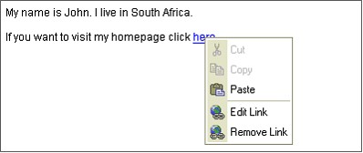

Context Menu
Once you start working with text, the context menu becomes very useful. It's a menu which will appear when you click the right button of your mouse anywhere inside the editing area or on an existing object.
Example:

As it names indicates the menu is context sensitive, which means that the available items depend on the place you click. For example, the following options may appear if you click inside a table:
It's enough to click the menu item to execute its function. Some of the functions maybe disabled. For example, the cut and copy options will be disabled if there is no text highlighted.
Copyright © 2009, Robert Moorehouse